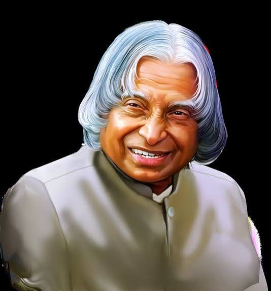

The Missile Man of India and the People's President

Dr. A.P.J. Abdul Kalam was one of India's most respected scientists and leaders. He was born on October 15, 1931, in Rameswaram, Tamil Nadu. He came from a humble family and worked hard to achieve his dreams.
Kalam studied physics and later aerospace engineering. He became an important scientist and contributed greatly to India's space and defence programs. Because of his work in missile development, he became popularly known as the Missile Man of India.
In 2002, Dr. Kalam became the President of India. He served as the 11th President and was loved by people, especially students. He always encouraged young people to dream big and work hard.
Even after his presidency, Dr. Kalam continued teaching and inspiring students. His life remains an example of dedication, simplicity, knowledge, and hard work.
Born in Rameswaram, Tamil Nadu.
Played an important role in India's missile programs.
Received the Bharat Ratna, India's highest civilian award.
Became the 11th President of India.
Continued inspiring students until the end of his life.
"Dream, dream, dream. Dreams transform into thoughts and thoughts result in action."
- Dr. A.P.J. Abdul Kalam
Dr. A.P.J. Abdul Kalam continues to inspire millions of students and young people around the world. His message was simple: believe in yourself, gain knowledge, work hard, and never stop dreaming.